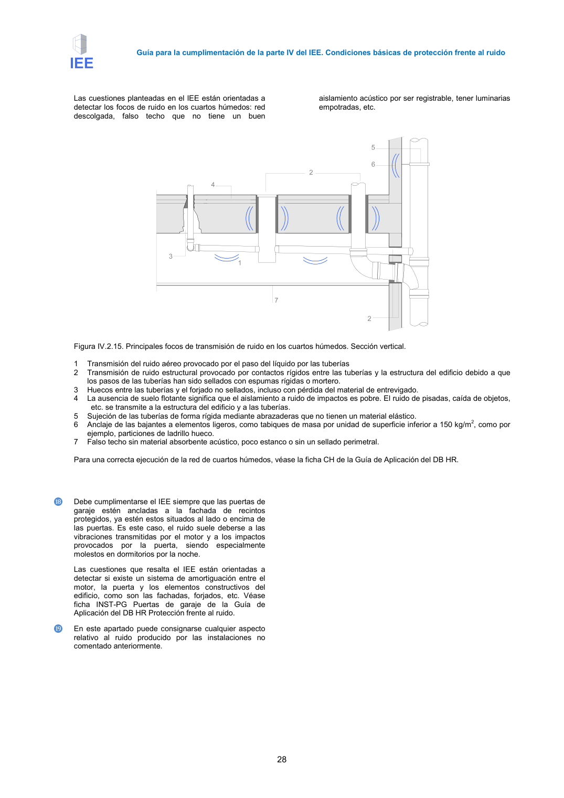

GUIA · Página 28 · versión 2016-11-01
SHA256: 813669d3066c0ff79457d57b80b0512a4fbb248bc5db1f7baf473c369a064738 · página física 28 de 65 · métodos de encabezado
solo si están cotejados.
Formatos: Markdown · JSON de bloques · PDF p. 28 · imagen PNG
Guía para la cumplimentación de la parte IV del IEE. Condiciones básicas de protección frente al ruido 28 Las cuestiones planteadas en el IEE están orientadas a detectar los focos de ruido en los cuartos húmedos: red descolgada, falso techo que no tiene un buen aislamiento acústico por ser registrable, tener luminarias empotradas, etc. Figura IV.2.15. Principales focos de transmisión de ruido en los cuartos húmedos. Sección vertical. 1 Transmisión del ruido aéreo provocado por el paso del líquido por las tuberías 2 Transmisión de ruido estructural provocado por contactos rígidos entre las tuberías y la estructura del edificio debido a que los pasos de las tuberías han sido sellados con espumas rígidas o mortero. 3 Huecos entre las tuberías y el forjado no sellados, incluso con pérdida del material de entrevigado. 4 La ausencia de suelo flotante significa que el aislamiento a ruido de impactos es pobre. El ruido de pisadas, caída de objetos, etc. se transmite a la estructura del edificio y a las tuberías. 5 Sujeción de las tuberías de forma rígida mediante abrazaderas que no tienen un material elástico. 6 Anclaje de las bajantes a elementos ligeros, como tabiques de masa por unidad de superficie inferior a 150 kg/m2, como por ejemplo, particiones de ladrillo hueco. 7 Falso techo sin material absorbente acústico, poco estanco o sin un sellado perimetral. Para una correcta ejecución de la red de cuartos húmedos, véase la ficha CH de la Guía de Aplicación del DB HR. ⓲ Debe cumplimentarse el IEE siempre que las puertas de garaje estén ancladas a la fachada de recintos protegidos, ya estén estos situados al lado o encima de las puertas. Es este caso, el ruido suele deberse a las vibraciones transmitidas por el motor y a los impactos provocados por la puerta, siendo especialmente molestos en dormitorios por la noche. Las cuestiones que resalta el IEE están orientadas a detectar si existe un sistema de amortiguación entre el motor, la puerta y los elementos constructivos del edificio, como son las fachadas, forjados, etc. Véase ficha INST-PG Puertas de garaje de la Guía de Aplicación del DB HR Protección frente al ruido. ⓳ En este apartado puede consignarse cualquier aspecto relativo al ruido producido por las instalaciones no comentado anteriormente.
